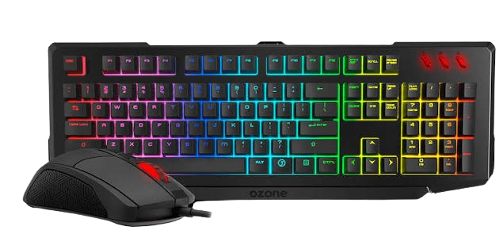

Los dispositivos de entrada y salida

Los dispositivos (también llamados periféricos) son los accesorios que se conectan al ordenador para ampliar sus funciones y permitir que puedas interactuar con él. Aunque no forman parte del núcleo interno, son indispensables para que el equipo sea útil en el día a día.
Gracias a estas piezas externas, tú y el ordenador podéis intercambiar información constantemente y realizar tareas muy distintas, desde escribir un texto o jugar una partida hasta escuchar música o guardar datos fuera del equipo. Sin ellos, toda la potencia del procesador quedaría encerrada sin forma de comunicarse con el exterior.
LOS DISPOSITIVOS DE ENTRADA |
LOS DISPOSITIVOS DE SALIDA |
|
Los dispositivos de entrada son los sentidos del ordenador. Son todas las piezas externas que te permiten comunicarte con el equipo, enviarle información y darle órdenes para que sepa qué quieres hacer en cada momento. Cada vez que escribes con el teclado, mueves el ratón, hablas por un micrófono o pulsas los botones de un mando de videojuegos, estos aparatos traducen tus movimientos o tu voz en señales digitales que el procesador entiende al instante. Sin ellos, el ordenador sería como una caja cerrada con la que no podrías interactuar. 
|
Los dispositivos de salida son la voz y el rostro del ordenador. Son todas las piezas externas que utiliza el equipo para comunicarse contigo y mostrarte los resultados de todo lo que ha procesado en su interior. Cuando ves una imagen en el monitor, escuchas los efectos de un juego por los altavoces o los auriculares, o sacas un trabajo en papel con la impresora, estos aparatos traducen los datos digitales del ordenador a imágenes, sonidos o textos que tú puedes ver y oír fácilmente. 
|